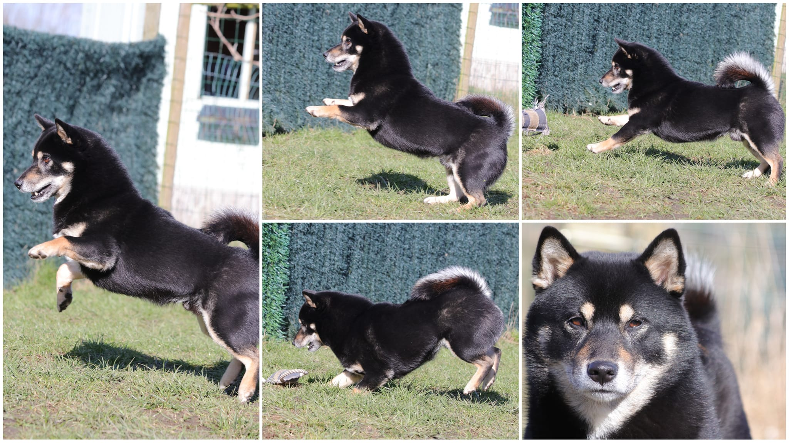
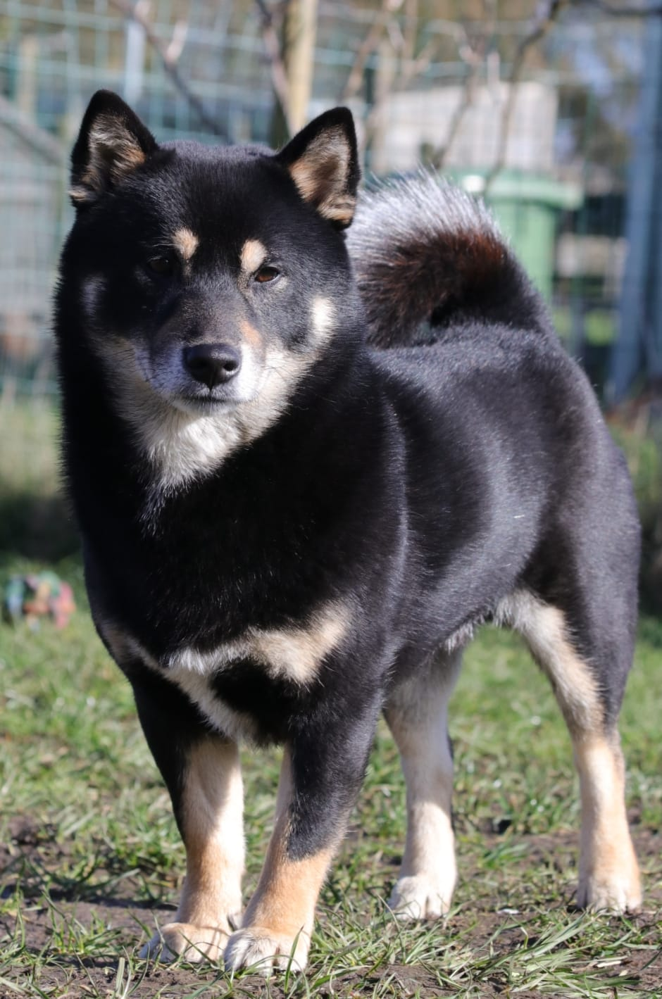
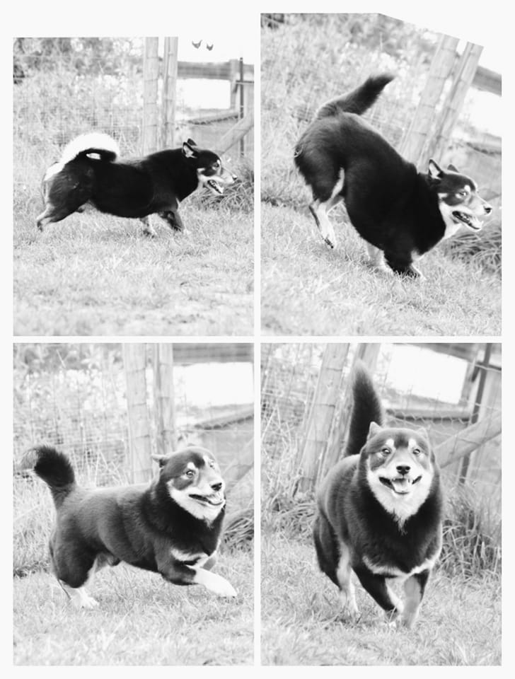
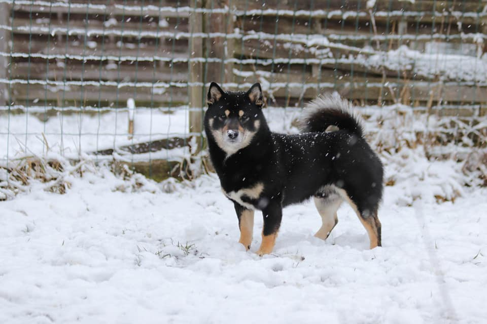
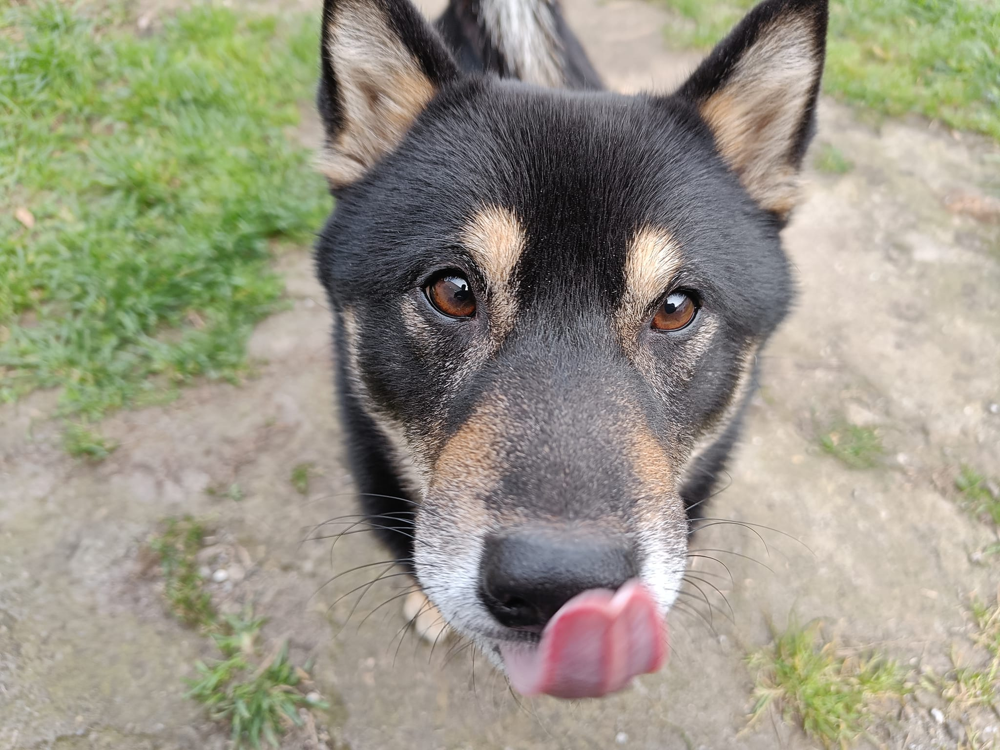

Deze mooie man is Yuki.
Yuki is een Shiba kruising van twee jaar en zoekt een thuis als enig huisdier.
Hij is momenteel in opvang waar men de tijd neemt om aan enkele punten te werken.
Pas wanneer Yuki er klaar voor is kan een verhuis, in samenspraak en onder begeleiding, doorgaan.
Een cursus volgen bij een door ons aangeraden deskundige is een must.
Dit helpt om de onderlinge band op te bouwen en elkaar te leren begrijpen.
Wat Yuki zoekt is een thuis waar geen kinderwens is of jonge kinderen (meer) komen.
Hij heeft nood aan een rustige thuis met eigenaren die weten waar ze aan beginnen.
Yuki is momenteel in training voor zijn gedrag.
Yuki durft te dreigen en ook bijten in bepaalde situaties.
Gelukkig is Yuki jong en heeft hij bewezen graag bij te willen leren.
Sowiezo zal hij wel tijd nodig hebben om een nieuwe eigenaar te vertrouwen.
Onze raad volgen, net zoals mogelijke verwijzingen en een Shibaproof tuin hebben is een must.
Als je met Yuki door 1 deur kan, heb je er een heerlijk hondje aan die veel aanvaard.
Samen wandelen, spelen, knuffelen, genieten van chill momenten, ....
Yuki is op wandeling reactief naar andere honden.
Hier valt ook aan te werken.
Alleen blijven zal opbouw vragen in een nieuwe omgeving.
Voor alles raden we aan dat tijd, begrip en geduld een must is.
Dat een (bindings)cursus volgen enkel voordelig kan zijn.
Yuki vindt volwassen mensen leuk die hem respectvol behandelen.
Kinderen kunnen best afstand houden.
Drukke plaatsen (met veel kinderen) zijn ook niets voor hem.
Verder is Yuki een heerlijke Shiba man.
Denk jij Yuki een thuis te kunnen bieden?
Mail ons dan via shibarescuevzw@gmail.com





|